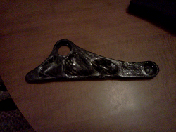

DIY Carbon Fiber Bike Parts

I began reading about carbon fiber design and layup briefly and realized that carbon fiber design can done at home with a minimal amount of equipment. I decided to try a small part first so get the hang of it. I wanted to mold a part from my mountain bike with the idea that at some point, I would replace the whole frame with carbon fiber parts. Luckily my bike has a removable seat stay. That's the part of the frame that connects from the rear wheel to just below the seat. The removable seat stay design allowed for removal and easy copying of the design. However, the seat stay is also a critical structural component of the frame. On to making the mold.. This is by far the most critical and time-consuming portion of the project. There are two options: make a mold of the outside of the part, or make a foam copy of the part. I decided on the the foam option because it is much cheaper. I used regular pink insulation foam from a ...